みなさんこんにちは。僕はうどんどんRと名乗るものです。レースゲームが好きです。 特に国産レースゲームの雰囲気が好きなのですが、最近はまったく国産レースゲーが出ません。マリ〇ーとグラン〇ーリス〇ぐらいしか出ません。
…情けないとは思いませんか！？！？！？！？
レースゲームを信じなさい！！！！！ この記事の内容をしっかりと頭に焼き付け、うどんどんRと共にレースゲームを量産し、レースゲーム帝国の設立を目指しましょう！！！！！！
…といいたいところなのですが、そんなにがっつり講座をされても困る人が大半だと思います。 今回の講座では、Unityを使ってレースゲームっぽい何か(タイムアタックができるだけのやつ)に挑戦してみましょう。 Unityをそれなりに触ったことがある方ならできる程度の内容だと思います。バージョンは2018.1.0f2ですが、多分最近のUnityであれば大丈夫です。
とりあえず車が動かせればレースゲームでしょう。(適当) まずは走らせるための地面がないといけませんね。
Hierarchy上で右クリック→3D Object→Planeと選ぶと床が出てきます。ちょっと狭いかもですね。 ScaleのX,Yの値を1000にすれば余程のことが無い限り大丈夫だと思い
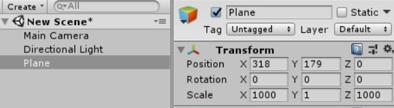
次はお待ちかねの車(のような何か)を作成していきましょう。 Unityのスタンダードアセットなどもあるのですが、自分でいろいろ調整したほうが楽しいので適当に作っちゃいましょう。
まず車に見立てるCubeを作成します。ScaleはX=1,Y=0.5,Z=2.5とかに調整すると何となく車っぽい比率になります。 Materialを作成して色も付けてみました。名前はCarにしておくとわかりやすいですね。
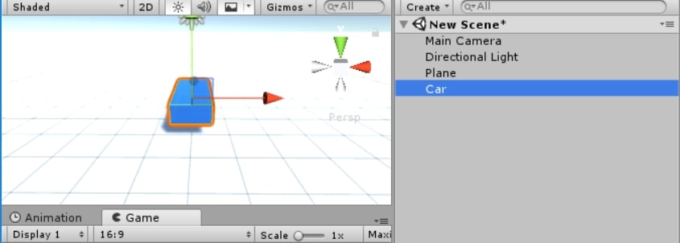
Rigidbodyもアタッチします。これを付けておけば当たり判定の面で楽ができるためです。 今回は軽めにやりたいのでy軸の位置を固定したいと思います。 衝突時に勝手に回転を計算されると面倒なので、回転はx,y,zすべて固定します。 重力もオフにしておきましょう。こうすると高低差のあるコースは走れませんが、その分作りやすくなります。
CollisionDetectionはContinuousDynamicに設定しておきます。 この設定は当たり判定に影響し、ContinuousDynamicは一番重いけど一番ちゃんと判定を計算してくれる設定です。(詳しいことはググってね) レースゲームの車は高速で動くので、この設定にしておくのが一番いいかなと思います。(今回の記事の内容だとContinuousでも大丈夫かも)
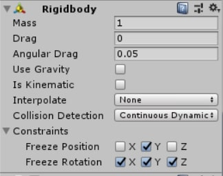
また、MainCameraを作成したCarの子オブジェクトに設定し、ポジションなどもレースゲームっぽく調整しておきましょう。 (Field of Viewを広めにしとくとスピード感が出やすいですよ) 子オブジェクトに設定したことで、MainCameraがCarの動きについてくるようになります。
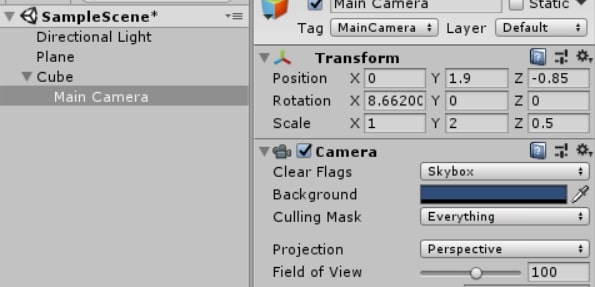
Gameビューがこんな感じだとそれっぽいんじゃないでしょうか。
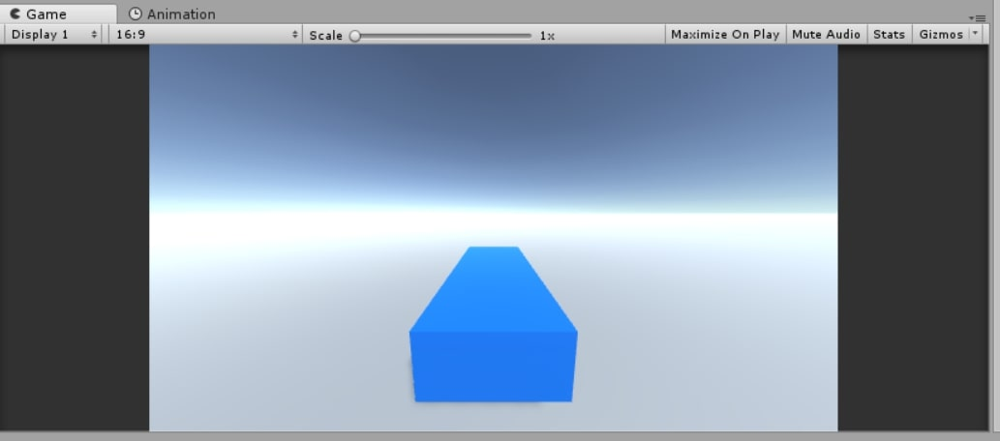
スクリプトも適当に書いてみました。名前はCarMoveとしました。
using System.Collections;
using System.Collections.Generic;
using UnityEngine;
public class CarMove : MonoBehaviour {
public float MaxSpeed;//最高速を決める変数(km/h)
public float AccelPerSecond;//加速力を決める変数(km/h*s)
public float TurnPerSecond;//旋回力を決める変数(deg/s)
private float Speed;
private Rigidbody rb;
void Start () {
Speed = 0;
rb = GetComponent<Rigidbody>();
}
void FixedUpdate () {
//速さの計算
if (Input.GetButton("Jump"))
{
Speed += AccelPerSecond * Time.deltaTime;
if (Speed > MaxSpeed) Speed = MaxSpeed;
}
else
{
Speed -= AccelPerSecond * Time.deltaTime / 2;
if (Speed < 0) Speed = 0;
}
rb.velocity = transform.forward * Speed;
//旋回する角度の計算
float Handle = Input.GetAxis("Horizontal");
transform.Rotate(Vector3.up,TurnPerSecond * Handle * Time.deltaTime);
}
}
いろいろ突っ込みどころはあると思いますが、とりあえずこれで許してください。ちょっとだけ補足しておくと、
rb.velocity = transform.forward * Speed;
こんな風に計算した速さをRigidbodyのvelocityに代入し続けることで、 オブジェクトを思い通りに動かしながらもRigidbodyに当たり判定処理をを丸投げできます。 transform.positionに直接値を足して動かしたりすると動きが変になったり当たり判定がうまくいかなくなったりするので注意しましょう。
作成したCarMoveはCarにアタッチします。最高速(km/h)、加速力(km/h*s)、旋回力(deg/s)の設定ができるので、好きな値を入力してください。
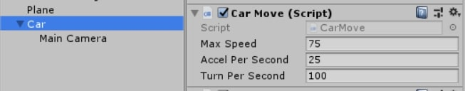
ここまで設定したら、とりあえずPlayしてみましょう。操作方法は下のような感じです。 |アクセル|ブレーキ|ハンドル| |:--|:--|:--| |↑キー|↓キー|←,→キー| 動きましたか？動かなければツイッターを開き、@Udon_R34という人に文句を言いましょう。
とりあえずコースを走れればレースゲームでしょう。(適当) たぶん、1.車を動かそうにくらべるとめちゃくちゃ内容が軽いです。
今回は、とりあえずCubeを置きまくってコースっぽく仕立て上げましょう。Create Emptyで「Course」というオブジェクトを作り、その下にCubeを置いていくといいと思います。 今回高低差のあるコースは走れない仕様にしてしまったので、坂道などは走れないことだけは気を付けましょう。
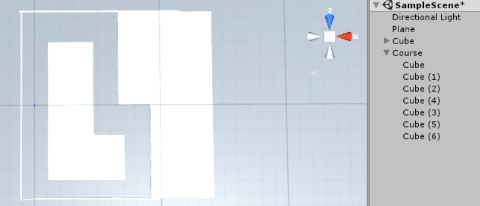
こんなふうにしてみました。ここは各自自由に作っていただいて大丈夫です。 コースができたら、ちゃんと一周できるか、壁にぶつかるかなどをテストしましょう。
大丈夫そうであれば、後で使うスタートラインを設置しておきます。 このオブジェクトは接触した際にイベントを起こすことができるTriggerオブジェクトとして設定します。 任意の位置にスタートライン代わりになるCubeを置き、BoxColliderのIsTriggerにチェックを入れましょう。 また、スタートライン用のMaterialを作成し、RenderingModeをFadeにして色やAlpha値を変えるとスタートラインであることがわかりやすくなります。 名前もStartLineにしておくといいでしょう。
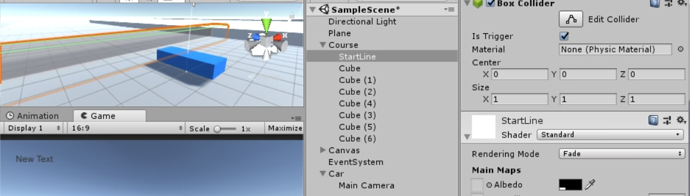
また、StartLineというTagを追加し、オブジェクトに設定しておきます。
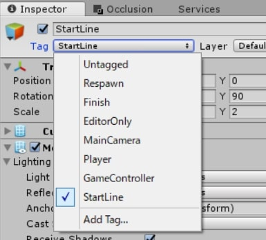
今回作成したコースはUnityのEditor上で作成したCubeを並べたものという超単純なものですが、 Blenderなどのモデリングソフトを利用して作るともうちょっと楽にいろんなコースができるかなと思うのでおすすめです。 (その場合MeshColliderの設定とかが必要ですが) プログラミングに自信がある人は、Editor上で曲線データを利用して動的(？)にメッシュを生成する方法を使ってコースを作れるといろいろできて楽しいと思います。
先ほど作成したコースとスタートラインを使って、タイムを計ってみましょう。また、画面上にタイムを表示させてみましょう。
まずタイムを表示するためのオブジェクトを先につくっておきます。Hierarchy上で右クリックし、UI→Textと選択します。 するとCanvasというオブジェクトの子オブジェクトとしてTextが生成されます。名前はTimerTextとしておきました。
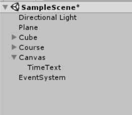
TimerTextをいじる前に、やっておきたい設定があります。 TimerTextの上にあるCanvasには色々なコンポーネントがアタッチされていますが、とりあえずCanvasScalerのUIScaleModeをScaleWithScreenSizeにしておきましょう。 これについて詳しい説明は長くなってしまうので避けますが、やっておかないといろいろ表示がずれたりして面倒なことになります。 (この辺を理解している人はお好きに設定していただいて大丈夫です)
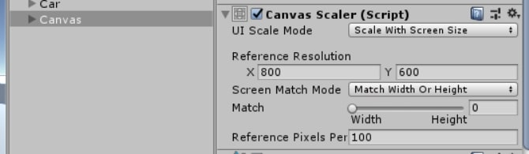
Canvas設定を終えたら、好きな位置にTimerTextを移動させましょう。Gameビューの左上あたりに表示させるとそれっぽいかなと思います。
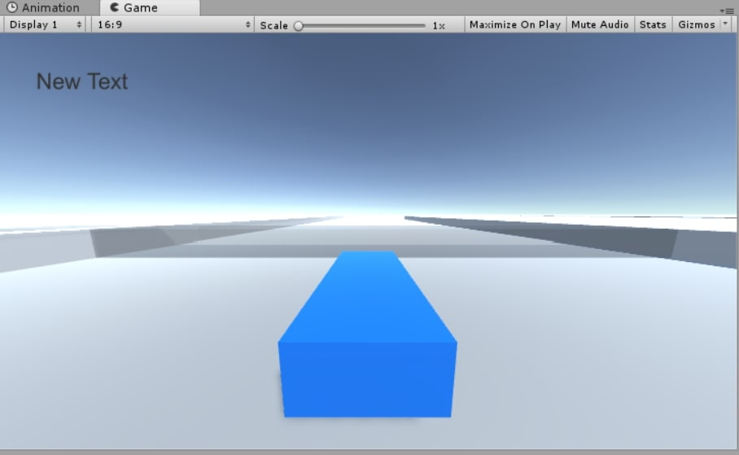
TimerTextの設定が終わったら、スクリプトを書いていきます。今回はプレイヤーである車にアタッチするスクリプトとしてCarTimerを作成しました。
using System.Collections;
using System.Collections.Generic;
using UnityEngine;
using UnityEngine.UI;
public class CarTimer : MonoBehaviour {
private bool timerStart;
private bool timerFinished;
private float totalTime;
public Text UItext;
void Start()
{
timerStart = false;
timerFinished = false;
totalTime = 0;
}
void FixedUpdate () {
if (timerStart == true && timerFinished == false)
totalTime += Time.deltaTime;
UItext.text = totalTime.ToString("F2");
}
private void OnTriggerEnter(Collider other)
{
if(other.gameObject.tag == "StartLine")
{
if (timerStart == false)
timerStart = true;
else
timerFinished = true;
}
}
}
このスクリプトも突っ込みどころがあるというか、勘の良い人は致命的欠陥に気づくかもしれませんがとりあえずこれで許してください。
OnTriggerEnter内の処理では、StartLineと最初に衝突したとき(timerStartがfalseのとき)にタイマーをスタートさせ、 二回目に衝突したとき(timerStartがfalseでないとき)にタイマーを停止させるとしています。実際のtotalTimeの値の加算はFixedUpdate内で行っていますね。 また、UItextには先ほど作成したTimerTextという名前のオブジェクトをアタッチするという想定でスクリプトを書いています。
これをCarにアタッチして、変数UItextにはオブジェクトであるTimerTextにアタッチされているTextコンポーネントを参照させます。 (Hierarchy上にあるTimerTextをドラッグしてInspector上のUItextに持ってくる感じにするとできると思います)
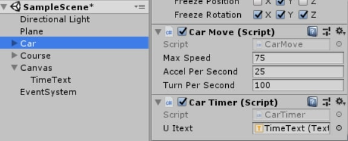
上のように表示されていればOKです。実際にPlayしてみましょう。
スタートラインに触れたときにタイマーがスタートし、一周してもう一度触れた際にタイマーがストップしていれば成功です。 成功しない人はツイッターを開き、@Udon_R34という人に文句を言いましょう。
以上三つのステップを通して、なんとなくタイムアタックっぽいことができるレースゲーム的な何かが完成したと思います。が、明らかに問題点が山積みです。
先ほど作ったCartimerについて、「勘の良い人は致命的欠陥に気づく」と記述したと思います。 いったいどんな欠陥かおわかりになりますでしょうか。
スタートラインを一回通りタイマーをスタートさせた後、Uターンしてもう一度スタートラインに触れてみてください。 なんということでしょう。コースを一周していないのにタイマーが止まってしまいました。
理由は単純で、「一回目に通った時にスタート、二回目通った時にストップ」という処理では周回したかどうかを見ていないからですね。 この現象を直すためには、ちゃんと周回判定を行わなければなりません。 ですが…今回、周回判定のちゃんとしたやり方は皆様に丸投げしたいと思います！！！！！（ごめんなさい）他にも色々問題があるので、 それらに対する改善のヒントをちらほら出して終わりにしたいと思います。
僕がレースゲームを作る際に毎回やっていたのは、ざっくり説明するとコースにチェックポイントを設置し、それらをすべて通ることで初めて周回したと判定するというような方法です。 イメージ的には以下のような感じです。
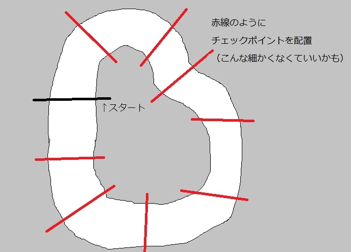
上図のようにチェックポイントを設置し、それぞれのチェックポイントを通過したかどうかの情報を車側で保持しておきます。 そして自分がスタートラインを通った際、すべてのチェックポイントを通っている時だけ周回したと判定する、というような方法です。 詳しいやり方については、今回スタートラインを作る際に使ったトリガーやタグを使いこなせば何とかなると思います！！(適当)
やっぱり一人で走るのは寂しいですよね。相手が欲しいですよね。わかります。そのためにはクソめんどいAIマシンを作らなければなりません。 真面目に作ろうとすると永遠に時間がかかる部分だと思います。いろいろやり方はあるので、今回説明するのはやり方の一つぐらいに受け止めてください。
単純に目的地を順々に目指していくという方法を考えたいと思います。下図の様に仮想的なチェックポイントを配置します。
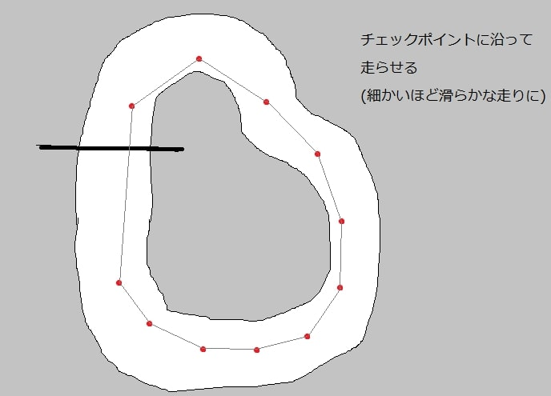
次にAIマシン側の操作を考えます。自分の現在位置と次のチェックポイントの位置から、 どちらにハンドルを切ればチェックポイントに到達するかを判断し、 その通りに操作していくといった感じで書くと上手くいくと思います。 ただ、このAIをそのまま量産すると全マシン同じような動きになってしまうので、 目標とする位置をAIによってちょっとずらしたりするとばらつきが出ていいかもしれません。まあ僕はやったことないですが…
今回作った挙動は単純すぎて、お世辞にも面白いとは言えないものだと思います。 ただ、基本としては今回やったような速度の計算と旋回力の計算の二つに分けて行っていくような形になると思います。
今回つくったスクリプトに工夫を加えて、速度が上がるほど曲がりづらくしてみたり、状況によって加速力を変動させてみたり、 ドリフト状態を作ってその時だけ旋回力を上げてみたりするとどんどん楽しい挙動になっていくのではないでしょうか。 現実の車両挙動を勉強して、その要素を入れてみたりすると急にそれっぽくなったりするのでおすすめです。
レースゲームは挙動さえしっかりしていれば、タイムアタックをしているだけでも結構楽しめたりします。 かなり大事な部分なので、しっかり作っていければ完成度が上がると思います。
今回は高低差のないコースを走ることを前提として作りましたが、実際は上下に起伏のあるコースを走れたほうが映えると思います。 僕が毎回やっていたのは、RayCastを使って地面の角度を判定する方法です。 RayCastは重いのであまり使わないほうがいいらしいのですが、こればかりは使わないと厳しいんじゃないかなと思います。
最も単純なのは、自分の真下にRayCastを発射し、当たった道路のベクトルの法線ベクトルをもとに自分の車の角度を変える方法です。 わかりやすいのですが、道路の勾配の変わり目で急に角度が変わるためカクカクした動きになりやすいです。
複雑ですが滑らかになりやすいのは、自分の真下にタイヤをイメージした4本のRayCastを発射して、それにより得た道路との接地点を元に車の角度を計算する方法です。 僕がよくやっていた方法はこっちになるのですが、 説明が難しくて僕も勢いで適当にやっていたので上手く説明できません。数学と格闘する覚悟がある人向けの方法です。僕はレースゲーム愛でゴリ押しました。
この辺の話は難しいので、興味のある方はツイッターを開き、@Udon_R34という人に文句を言いましょう。
本当は他にもどんなレースゲームが面白いと感じるのかとかいろいろ語りたかったのですが、話をまとめるのが苦手なのでやめときます。
というわけで、レースゲームっぽい何かを作る方法とその改善に関するあれこれを喋りました。 正直いろいろはしょりすぎたので、本当にUnity初心者の方にはわからない部分がめちゃくちゃ出てしまう内容になっていると思います。 しかしもし興味があればツイッターを開き、@Udon_R34という人に文句を言うと応答が返ってくると思いますので、気軽になんでも聞いてください！
あとこんなに長々書いといてこんな事言うのもアレなんですが、 この記事を読んだからといって無理にレースゲームを完成させる必要は全くありません！！！ レースゲームに限らず、ゲーム制作は色々と大変なので、愛が無いと厳しい部分も結構あると思います。 しかし逆に考えれば、愛があれば多少厳しいジャンルでも完成させることができると言えるのではないでしょうか。 この記事の内容はレースゲーム以外に活かせるものもあると思うので、そういった面で参考になれば幸いです。 一番いいのは自分が作りたいゲームを作ることだと思うので、 自分の欲望を暴走させて創作活動に活かしていってほしいなと思います。でもソフメでエッチなの作るのはだめだよ。
以上です。お付き合いいただきありがとうございました。